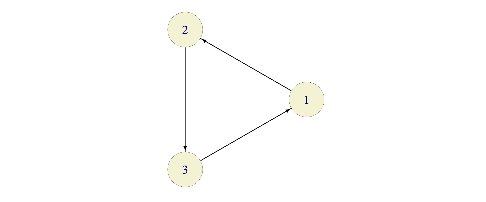
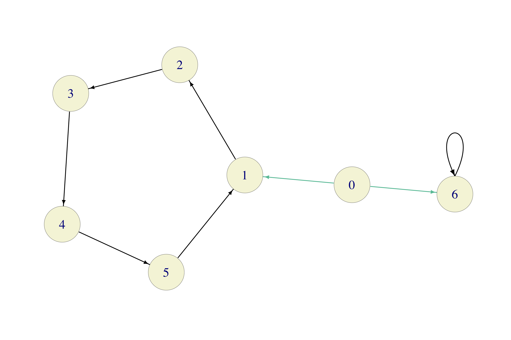
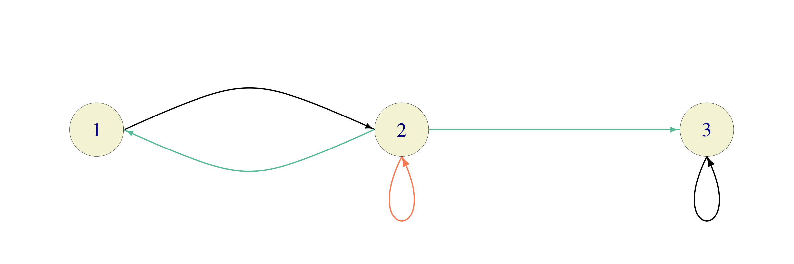

Chapter 6 Classification of States
There will be a lot of definitions and some theory before we get to examples. You might want to peek ahead as notions are being introduced; it will help your understanding.
6.1 The Communication Relation
Let \(\{X_n\}_{n\in {\mathbb{N}}_0}\) be a Markov chain on the state space \(S\). For a given set \(B\) of states, define the (first) hitting time \(\tau_B\) (or \(\tau(B)\) if subscripts are impractical) of the set \(B\) as \[\begin{equation} \tau_B=\min \{ n\in{\mathbb{N}}_0\, : \, X_n\in B\}. \end{equation}\] We know that \(\tau_B\) is, in fact, a stopping time with respect to \(\{X_n\}_{n\in {\mathbb{N}}_0}\). When \(B\) consists of only one element , e.g. \(B=\{i\}\), we simply write \(\tau_{i}\) for \(\tau_{\{i\}}\); \(\tau_{i}\) is the first time the Markov chain \(\{X_n\}_{n\in {\mathbb{N}}_0}\) “hits” the state \(i\). As always, we allow \(\tau_{B}\) to take the value \(\infty\); it means that no state in \(B\) is ever hit.
The hitting times are important both for applications, and for better understanding of the structure of Markov chains in general. For example, let \(\{X_n\}_{n\in {\mathbb{N}}_0}\) be the chain which models a game of tennis (from the previous lecture). The probability of winning for Player 1 can be phrased in terms of hitting times: \[{\mathbb{P}}[ \text{Player 1 wins}]={\mathbb{P}}[ \tau_{i_{1}}<\tau_{i_{2}}],\] where \(i_{1}=\) “Player 1 wins” and \(i_{2}=\)“Player 2 wins” (the two absorbing states of the chain). We will learn how to compute such probabilities in the subsequent lectures.
Having introduced the hitting times \(\tau_B\), let us give a few more definitions. It will be very convenient to consider the same Markov chain with different initial distributions. Most often, these distributions will correspond to starting from a fixed state (as opposed to choosing the initial state at random). We use the notation \({\mathbb{P}}_i[A]\) to mean \({\mathbb{P}}[A|X_0=i]\) (for any event \(A\)), and \({\mathbb{E}}_i[A]={\mathbb{E}}[A|X_0=i]\) (for any random variable \(X\)). In practice, we use \({\mathbb{P}}_i\) and \({\mathbb{E}}_i\) to signify that we are starting the chain from the state \(i\), i.e., \({\mathbb{P}}_i\) corresponds to a Markov chain whose transition matrix is the same as the one of \(\{X_n\}_{n\in {\mathbb{N}}_0}\), but the initial distribution is given by \({\mathbb{P}}_i[X_0=j]=0\) if \(j\not = i\) and \({\mathbb{P}}_i[X_0=i]=1\). Note also that \({\mathbb{P}}_i[X_1=j] = p_{ij}\) and that \({\mathbb{P}}_i[X_n=j] =p^{(n)}_{ij}\), for any \(n\).
A state \(i\in S\) is said to communicate with the state \(j\in S\), denoted by \(i{\rightarrow}j\) if \[{\mathbb{P}}_i[\tau_{j}<\infty]>0.\]
Intuitively, \(i\) communicates with \(j\) if there is a non-zero chance that the Markov chain \(X\) will eventually visit \(j\) if it starts from \(i\). Sometimes we also say that \(j\) is a consequent of \(i\), that \(j\) is accessible from \(i\), or that \(j\) follows \(i\).
In the “tennis” example of the previous chapter, every state is accessible from \((0,0)\) (the fact that \(p\in (0,1)\) is important here), but \((0,0)\) is not accessible from any other state. The consequents of \((0,0)\) are not only \((15,0)\) and \((0,15)\), but also \((30,15)\) or \((40,40)\). In fact, all states are consequents of \((0,0)\). The consequents of \((40,40)\) are \((40,40)\) itself, \((40,Adv)\), \((Adv, 40)\), “P1 wins” and “P2 wins”.
Problem 6.1 Explain why \(i {\rightarrow}j\) if and only if \(p^{(n)}_{ij}>0\) for some \(n\in{\mathbb{N}}_0\).
Solution. Leaving a rigorous mathematical proof aside, we note that the statement is intuitively easy to understand. If \(i{\rightarrow}j\) then there must exist some time \(n\) such that \({\mathbb{P}}_i[\tau_j = n]>0\). This, in turn, implies that it is possible to go from \(i\) to \(j\) in exactly \(n\) steps, where “possible” means “with positive probability”. In our notation, that is exactly what \(p^{(n)}_{ij}>0\) means.
Conversely, if \(p^{(n)}_{ij}>0\) then \({\mathbb{P}}_i[ \tau_j <\infty] \geq {\mathbb{P}}_i[\tau_j \leq n] \geq {\mathbb{P}}_i[ X_n = j]=p^{(n)}_{ij}>0.\)
Two immediate properties of the relation \({\rightarrow}\) are listed in the problem below:
Problem 6.2 Explain why the following statements are true for all states \(i,j,k\) of a Markov chain.
\(i{\rightarrow}i\),
\(i{\rightarrow}j, j{\rightarrow}k\) implies \(i {\rightarrow}k\).
Solution.
If we start from state \(i\in S\) we are already there! More rigorously, note that \(0\) is allowed as a value for \(\tau_{B}\) in its definition above, i.e., \(\tau_i=0\) when \(X_0=i\).
Intuitively, if you can follow a path (sequence of arrows) from \(i\) to \(j\), and then another path \(j\) to \(k\), you can do the same from \(i\) to \(k\) by concatenating two paths. More rigorously, by the previous problem, it will be enough to show that \(p^{(n)}_{ik}>0\) for some \(n\in{\mathbb{N}}\). By the same Proposition, we know that \(p^{(n_1)}_{ij}>0\) and \(p^{(n_2)}_{jk}>0\) for some \(n_1,n_2\in{\mathbb{N}}_0\). By the Chapman-Kolmogorov relations, with \(n=n_1+n_2\), we have \[\begin{equation} p^{(n)}_{ik} =\sum_{l\in S} p^{(n_1)}_{il} p^{(n_2)}_{lk}\geq p^{(n_1)}_{ij} p^{(n_2)}_{jk}>0. \end{equation}\] Note that the inequality \(p^{(n)}_{ik}\geq p^{(n_1)}_{il}p^{(n_2)}_{lk}\) is valid for all \(i,l,k\in S\), as long as \(n_1+n_2=n\). It will come in handy later.
Remember that the greatest common divisor (gcd) of a set \(A\) of natural numbers if the largest number \(d\in{\mathbb{N}}\) such that \(d\) divides each \(k\in A\), i.e., such that each \(k\in A\) is of the form \(k=l d\) for some \(l\in{\mathbb{N}}\).
A period \(d(i)\) of a state \(i\in S\) is the greatest common divisor of the return set \[R(i)= \{ n\in{\mathbb{N}}\, : \, p^{(n)}_{ii}>0\}\] of the state \(i\). When \(R(i)=\emptyset\), we set \(d(i)=1\). A state \(i\in S\) is called aperiodic if \(d(i)=1\).
Problem 6.3 Consider two Markov chains with three states and the transition matrices \[P_1=\begin{bmatrix} 0 & 1 & 0 \\ 0 & 0 & 1 \\ 1 & 0 & 0 \end{bmatrix}, \quad P_2=\begin{bmatrix} 0 & 1 & 0 \\ 0 & 0 & 1 \\ \tfrac{1}{2} & 0 & \tfrac{1}{2} \end{bmatrix}\]
Find return sets and periods of each state \(i\) of each chain.
Solution. For the first chain, with transition graph

the return set for each state \(i\in\{1,2,3\}\) is given by \(R(i)= \{3,6,9,12,\dots\}\), so \(d(i)=3\) for all \(i\in\{1,2,3\}\).
Even though the transition graph of the second chain looks very similar to the first one

the situation changes drastically: \[\begin{align} R(1) & =\{ 3,4,5,6, \dots \},\\ R(2) & =\{ 2,3,4,5,6, \dots \},\\ R(3) & =\{ 1,2,3,4,5,6, \dots \}, \end{align}\] so that \(d(i)=1\) for \(i\in\{1,2,3\}\).
6.2 Classes
We say that the states \(i\) and \(j\) in \(S\) intercommunicate, denoted by \(i\leftrightarrow j\) if \(i{\rightarrow}j\) and \(j{\rightarrow}i\). A set \(B\subseteq S\) of states is called irreducible if \(i\leftrightarrow j\) for all \(i,j\in S\).
Unlike the relation of communication, the relation of intercommunication is symmetric. Moreover, we have the following immediate property: the relation \(\leftrightarrow\) is an equivalence relation on \(S\), i.e., for all \(i,j,k\in S\), we have
\(i\leftrightarrow i\) (reflexivity) ,
\(i\leftrightarrow j\) implies \(j\leftrightarrow i\) (symmetry), and
\(i\leftrightarrow j, j\leftrightarrow k\) implies \(i\leftrightarrow k\) (transitivity).
The fact that \(\leftrightarrow\) is an equivalence relation allows us to split the state-space \(S\) into equivalence classes with respect to \(\leftrightarrow\). In other words, we can write \[S=S_1\cup S_2\cup S_3\cup \dots,\] where \(S_1, S_2, \dots\) are mutually exclusive (disjoint) and all states in a particular \(S_n\) intercommunicate, while no two states from different equivalence classes \(S_n\) and \(S_m\) do. The sets \(S_1, S_2, \dots\) are called classes of the chain \(\{X_n\}_{n\in {\mathbb{N}}_0}\). Equivalently, one can say that classes are maximal irreducible sets, in the sense that they are irreducible and no class is a subset of a (strictly larger) irreducible set. A cookbook algorithm for class identification would involve the following steps:
Start from an arbitrary state (call it \(1\)).
Identify all states \(j\) that intercommunicate with it (\(1\), itself, always does).
That is your first class, call it \(C_1\). If there are no elements left, then there is only one class \(C_1=S\). If there is an element in \(S\setminus C_1\), repeat the procedure above starting from that element.
The notion of a class is especially useful in relation to another natural concept: A set \(B\subseteq S\) of states is said to be closed if \(i\not{\rightarrow}j\) for all \(i\in B\) and all \(j\in S\setminus B\). In words, \(B\) is closed if it is impossible to get out of. A state \(i\in S\) such that the set \(\{i\}\) is closed is called absorbing.
Problem 6.4 Show that a set \(B\) of states is closed if and only if \(p_{ij}=0\) for all \(i\in B\) and all \(j\in B^c=S\setminus B\).
Solution. Suppose, first, that \(B\) is closed. Then for \(i\in B\) and \(j\in B^c\), we have \(i\not{\rightarrow}j\), i.e., \(p^{(n)}_{ij}=0\) for all \(n\in{\mathbb{N}}\). In particular, \(p_{ij}=0\).
Conversely, suppose that \(p_{ij}=0\) for all \(i\in B\), \(j\in B^c\). We need to show that \(k\not{\rightarrow}l\) (i.e. \(p^{(n)}_{kl}=0\) for all \(n\in{\mathbb{N}}\)) for all \(k\in B\), \(l\in B^c\). Suppose, to the contrary, that there exist \(k\in B\) and \(l\in B^c\) such that \(p^{(n)}_{kl}>0\) for some \(n\in {\mathbb{N}}\). That means that we can find a sequence of states \[k=i_0, i_1, \dots, i_n=l \text{ such that } p_{i_{m-1} i_{m}}>0 \text{ forall }m = 1,\dots, n.\] The first state, \(k=i_0\) is in \(B\) and the last one, \(l=i_n\), is in \(B^c\). Therefore there must exist an index \(m\) such that \(i_{m-1}\in B\) but \(i_{m}\in B^c\). We also know that \(p_{i_m i_{m+1}}>0\), which is in contradiction with out assumption that \(p_{ij}=0\) for all \(i\in B\) and \(j\in B^c\).
Intuitively, a set of states is closed if it has the property that the chain \(\{X_n\}_{n\in {\mathbb{N}}_0}\) stays in it forever, once it enters it. In general, if \(B\) is closed, it does not have to follow that \(S\setminus B\) is closed. Also, a class does not have to be closed, and a closed set does not have to be a class. Here is an example - consider the following three sets of states in the tennis chain of the previous lecture and:
\(B=\{\text{``P1 wins''}\}\): closed and a class, but \(S\setminus B\) is not closed
\(B=S\setminus \{(0,0)\}\): closed, but not a class, and
\(B=\{(0,0)\}\): class, but not closed.
Not everything is lost as the following relationship always holds:
Problem 6.5 Show that every closed set \(B\) is a union of one or more classes.
Solution. Let \(\hat{B}\) be the union of all classes \(C\) such that \(C\cap B\not=\emptyset\). In other words, take all the elements of \(B\) and throw in all the states which intercommunicate with at least one of them. I claim that \(\hat{B}=B\). Clearly, \(B\subset \hat{B}\), so we need to show that \(\hat{B}\subseteq B\). Suppose, to the contrary, that there exists \(j\in \hat{B}\setminus B\). By construction, \(j\) intercommunicates with some \(i\in B\). In particular \(i{\rightarrow}j\). By the closedness of \(B\), we must have \(j\in B\). This is a contradiction with the assumptions that \(j\in \hat{B}\setminus B\).
Note that the converse is not true: just take the set \(B=\{ (0,0), (0,15)\}\) in the “tennis” example. It is a union of two classes, but it is not closed.
6.3 Transience and recurrence
It is often important to know whether a Markov chain will ever return to its initial state, and if so, how often. The notions of transience and recurrence are used to address this questions.
We start by introducing a cousin \(T_j(1)\) of the first hitting time \(\tau_1\). The (first) visit time to state \(j\), denoted by \(T_j(1)\) is defined as \[T_j(1) = \min \{ n\in{\mathbb{N}}\, : \, X_n=j\}.\] As usual \(T_j(1)=\infty\) if \(X_n\not = j\) for all \(n\in{\mathbb{N}}\). Similarly, second, third, etc., visit times are defined as follows: \[\begin{aligned} T_j(2) &= \min \{ n>T_j(1)\, : \, X_n=j\}, \\ T_j(3) &= \min \{ n>T_j(2)\, : \, X_n=j\}, \text{ etc., }\end{aligned}\] with the understanding that if \(T_j(n)=\infty\), then also \(T_j(m)=\infty\) for all \(m>n\).
Note that the definition of the random variable \(T_j(1)\) differs from the definition of \(\tau_j\) in that the minimum here is taken over the set \({\mathbb{N}}\) of natural numbers, while the set of non-negative integers \({\mathbb{N}}_0\) is used for \(\tau_j\). When \(X_0\not = j\), the hitting time \(\tau_j\) and the first visit time \(T_j(1)\) coincide. The important difference occurs only when \(X_0=j\). In that case \(\tau_j=0\) (we are already there), but it is always true that \(T_j(1)\geq 1\). It can even happen that \({\mathbb{P}}_j[T_j(1)=\infty]=1\). If you want an example, take any state in the deterministically monotone chain.
A state \(i\in S\) is said to be
recurrent if \({\mathbb{P}}_i[T_i(1)<\infty]=1\),
positive recurrent if \({\mathbb{E}}_i[T_i(1)]<\infty\)
null recurrent if it is recurrent, but not positive recurrent,
transient if it is not recurrent.
A state is recurrent if we are sure we will come back to it eventually (with probability 1). It is positive recurrent if it is recurrent and the time between two consecutive visits has finite expectation. Null recurrence means the we will return, but the waiting time may be very long. A state is transient if there is a positive chance (however small) that the chain will never return to it.
6.3.1 The Return Theorem
The definition of recurrence from above is conceptually simple, but it gives us no clue about how to actually go about deciding whether a particular state in a specific Markov chain is recurrent. A criterion stated entirely in terms of the transition matrix \(P\) would be nice. Before we give it, we need to introduce some notation. and prove an important theorem. Given a state \(i\), let \(f_i\) denote the probability that the chain will visit \(i\) again, if it starts there, i.e., \[f_i = {\mathbb{P}}_i[ T_i(1) < \infty].\] Clearly, \(i\) is recurrent if and only if \(f_i=1\).
The interesting thing is that every time our chain visits the state \(i\), its future evolution is independent of the past (except for the name of the current state) and it behaves exactly like a new and independent chain started from \(i\) would. This is a special case of so-called strong Markov property which states that the (usual) Markov property also holds at stopping times (and not only fixed times \(n\)). We will not prove this property in these notes, but we will gladly use it to prove the following dichotomy:
Theorem 6.1 (The "Return" Theorem) Let \(\{X_n\}_{n\in {\mathbb{N}}_0}\) be a Markov chain on a countable state space \(S\), with the (deterministic) initial state \(X_0=i\). Then exactly one of the following two statements hold with probability 1:
either the chain will return to \(i\) infinitely many times, or
the chain will return to \(i\) a finite number \(N_i\) of times, where \(N_i\) is geometrically distributed random variable with parameter \(f_i\), where \(f_i={\mathbb{P}}_i[T_i(1)<\infty]\).
In the first case, \(i\) is recurrent and, in the second, it is transient.
Proof. If \(f_i=1\), then \(X\) is guaranteed to return to \(i\) at least once. When that happens, however, the strong Markov property “deletes” the past, and the process “renews” itself. This puts us back in the original situation where we are looking at a chain which starts at \(i\) and is guaranteed to return there at least once. Continuing like that, we get a whole infinite sequence of stopping times \[T_i(1) < T_i(2) < \dots\] at which \(X\) finds itself at \(i\).
If \(f_i<1\), a similar story can be told, but with a significant difference. Every time \(X\) returns to \(i\), there is a probability \(1-f_i\) that it will never come back to \(i\), and, this is independent of the past behavior. If we think of the return to \(i\) as a success, the number of successes before the first failure, i.e., the number of return visits to \(i\), is nothing but a geometrically distributed random variable with parameter \(f_i\).
The following interesting fact follows (almost) directly from the Return Theorem:
Problem 6.6 Suppose that the state space \(S\) is finite. Show that there exists at least one recurrent state.
Solution. We argue by contradiction and assume that all the states are transient. We claim that, in that case, the total number of visits \(N_i\) to each state \(i\) is always finite, no matter what state \(i_0\) we start from. Indeed, if \(i=i_0\) that is precisely the conclusion the Return Theorem above. For a state \(i\ne i_0\), the number of visits is either \(0\) - if we never even get to \(i\), or \(1+N_{i}\) if we do. In either case, it is a finite number (not \(\infty\)).
Since \(S\) is finite, it follows that the sum \(\sum_{i\in S} N_i\) is also finite - a contradiction with the fact that there are infinitely many time instances \(n\in{\mathbb{N}}_0\), and the fact that the chain must be in some state in each one of them.
If \(S\) is not finite, it is not true that recurrent states must exist. Just think of the Deterministically-Monotone Chain or the random walk with \(p\not=\tfrac{1}{2}\). All states are transitive there.
6.3.2 A recurrence criterion
Perhaps the most important consequence of the Return Theorem is the following criterion for recurrence of Markov chains on finite or countable state spaces:
Theorem 6.2 (The Recurrence Criterion) A state \(i\in S\) is recurrent if and only if \[\sum_{n\in{\mathbb{N}}} p^{(n)}_{ii}=\infty.\]
Proof. Let \(N_i\) denote the total number (finite or \(\infty\)) of visits to the state \(i\), with the initial visit at time \(0\) not counted. We can write \(N_i\) as an infinite sum as follows \[N_i = \sum_{n=1}^{\infty} \mathbf{1}_{\{X_n = i\}}.\] Taking the expectation yields \[{\mathbb{E}}[N_i] = {\mathbb{E}}_i[ \sum_{n=1}^{\infty} \mathbf{1}_{\{X_n=i\}}] = \sum_{n=1}^{\infty} {\mathbb{E}}_i[ \mathbf{1}_{\{X_n=i\}}] = \sum_{n=1}^{\infty} {\mathbb{P}}_i[ X_n=i] = \sum_{n=1}^{\infty} p^{(n)}_{ii},\] where we used the intuitively acceptable (but not rigorously proven) fact that \({\mathbb{E}}_i\) and an infinite sum can be switched.
If \(i\) is transient, i.e., if \(f_i<1\), the Return Theorem and the formula for the expected value of a geometric distribution imply that \[{\mathbb{E}}_i[N_i] = \frac{f_i}{1-f_i}<\infty, \text{ and so } \sum_{n=1}^{\infty} p^{(n)}_{ii} = {\mathbb{E}}_i[N_i]<\infty.\] On the other hand, if \(i\) is recurrent, the Return Theorem states that \(N_i=\infty\). Hence, \[\sum_{n=1}^{\infty} p^{(n)}_{ii}={\mathbb{E}}_i[N_i]=\infty,\] which is exactly what we had to prove.
Remark. The central idea behind the proof of the recurrence criterion is the following: we managed tell whether or not \(N_i = \infty\) by checking whether \({\mathbb{E}}[N_i]=\infty\) or not. This is, however, not something that can be done for any old random variable taking values in \({\mathbb{N}}_0 \cup \{\infty\}\). If \({\mathbb{E}}[N]<\infty\), then, clearly \({\mathbb{P}}[N=\infty]=0\) so that \(N\) only takes values in \({\mathbb{N}}_0\). On the other hand, it is not true that \({\mathbb{P}}[N=\infty]=0\) implies that \({\mathbb{E}}[N]<\infty\). It suffices to take a random variable with the following distribution \[{\mathbb{P}}[ N = n] = c/n^2 \text{ for }n\in{\mathbb{N}},\] where the constant \(c\) is chosen so that \(\sum_n c/n^2 =1\) (in fact, we can compute that \(c=6/\pi^2\) explicitly in this case). The expected value of \(N\) is given by \[{\mathbb{E}}[N] = \sum_{n=1}^{\infty} n {\mathbb{P}}[N=n] = c \sum_{n=1}^{\infty} \frac{1}{n} = \infty.\] The message is that, in general, you cannot detect whether something happened infinitely many times or not based only on its expectation.
Such a detection, however, becomes possible in the special case when \(N=N_i\) denotes the total number of returns to the state \(i\) of a Markov chain. This is exactly the content of proof of the Return Theorem above: each time the chain leaves \(i\), it comes back to it (or does not) with the same probability, independently of the past. This gives us extra information about the random variable \(N\) (namely that it is either infinite with probability \(1\) or geometrically distributed) and allows us to test its finiteness by using the expected value only.
6.3.3 Polya’s theorem
Here is an application of our recurrence criterion - a beautiful and unexpected result of George Pólya from 1921.
In addition to the simple symmetric random walk on the line (\(d=1\)) we studied before, one can consider random walks whose values are in the plane (\(d=2\)), the space (\(d=3\)), etc. They defined as Markov Chains with the state space \(S={\mathbb{Z}}^d\) and the following transitions: starting from the state \((x_1,\dots, x_d)\), it picks one of its \(2d\) neighbors \[\begin{align} & (x_1+1,x_2, \dots, x_d), (x_1-1,x_2, \dots, x_d),\\ &(x_1, x_2+1,\dots, x_d), (x_1, x_2-1,\dots, x_d),\\ &... \\ &(x_1,x_2, \dots, x_d+1), (x_1,x_2, \dots, x_d-1)\end{align}\] randomly and uniformly and moves there. For illustration, here is a picture of a path of a two-dimensional random walk; as time progresses, the color of the edges goes from black to orange, edges traversed multiple times are darker, dots mark the position of the walk at time \(n=0\) (the black round dot) and at time \(n=1000\) (orange square dot):
Polya’s (and our) goal was to study the recurrence properties of the \(d\)-dimensional random walk. We already know that the simple symmetric random walk on \({\mathbb{Z}}\) is recurrent (i.e., every \(i\in {\mathbb{Z}}\) is a recurrent state). The easiest way to proceed when \(d\geq 2\) is to use the recurrence criterion we proved above. We start by estimating the values \(p^{(n)}_{ii}\), for \(n\in{\mathbb{N}}\). By symmetry, we can focus on the origin, i.e., it is enough to estimate, for each \(n\in{\mathbb{N}}\), the magnitude of \[p^{(n)}= p^{(n)}_{00}= {\mathbb{P}}_{0}[ X_n=(0,0,\dots, 0)].\] As we learned some time ago, this probability can be computed by counting all “trajectories” from \((0,\dots, 0)\) that return to \((0,\dots, 0)\) in \(n\) steps. First of all, it is clear that \(n\) needs to be even, i.e., \(n=2m\), for some \(m\in{\mathbb{N}}\). It helps if we think of any trajectory as a sequence of “increments” \(\xi_1,\dots, \xi_n,\) where each \(\xi_i\) takes its value in the set \(\{1,-1,2,-2,\dots, d, -d\}\). In words, \(\xi_i= +k\) if the \(k\)-th coordinate increases by \(1\) on the \(i\)-th step, and \(\xi_i=-k\), if the \(k\)-th coordinate decreases8
This way, the problem becomes combinatorial:
In how many ways can we put one element of the set \(\{1,-1,2,-2, \dots, d,-d\}\) into each of \(n=2m\) boxes so that the number of boxes with \(k\) in them equals to the number of boxes with \(-k\) in them?
To get the answer, we start by fixing a possible “count” \((i_1,\dots, i_d)\), satisfying \(i_1+\dots+i_d=m\) of the number of times each of the values in \(\{1,2,\dots, d\}\) occurs. These values have to be placed in \(m\) of the \(2m\) slots and their negatives (possibly in a different order) in the remaining \(m\) slots. So, first, we choose the “positive” slots (in \(\binom{2m}{m}\) ways), and then distribute \(i_1\) “ones”, \(i_2\) “twos”, etc., in those slots; this can be done in9 \[\binom{ m }{ i_1 i_2 \dots i_d}\] ways. This is also the number of ways we can distribute the negative “ones”, “twos”, etc., in the remaining slots. All in all, for fixed \(i_1,i_2,\dots, i_d\), all of this can be done in \[\binom{2m}{m} \binom{ m }{ i_1 i_2 \dots i_d}^2\] ways. Remembering that each path has the probability \((2d)^{-2m}\), and summing over all \(i_1,\dots, i_d\) with \(i_1+\dots+i_d=m\), we get \[\begin{equation} p^{(2m)} = \frac{1}{(2d)^{2m}} \binom{2m}{m} \sum_{i_1+\dots+i_d=m} \binom{ m }{ i_1 i_2 \dots i_d}^2. \tag{6.1} \end{equation}\] This expression looks so complicated that we better start examining is for particular values of \(d\):
For \(d=1\), the expression above simplifies to \(p^{(2m)} = \frac{1}{4^{m}} \binom{2m}{m}\). It is still too complicated sum over all \(m\in{\mathbb{N}}\), but we can simplify it further by using Stirling’s formula \[n! \sim \sqrt{2\pi n} \big(\tfrac{n}{e}\big)^n,\] where \(a_n \sim b_n\) means \(\lim_{n{\rightarrow}\infty} a_n/b_n=1\). Indeed, from there, \[\label{equ:binom} \begin{split} \binom{2m}{m} \sim \frac{4^m}{ \sqrt{\pi m}}, \end{split} \text{ and so } p^{(2m)} \sim \frac{1}{\sqrt{m\pi}}.\] That means that \(p^{(m)}\) behaves li a \(p\)-series with \(p=1/2\) which we know is divergent. Therefore, \[\sum_{m=1}^{\infty} p^{(2m)} = \infty,\] and we recover our previous conclusion that the simple symmetric random walk is, indeed, recurrent.
Moving on to the case \(d= 2\), we notice that the sum of the multinomial coefficients in (6.1) no longer equals \(1\); in fact it is given by10 \[\label{equ:Van} \begin{split} \sum_{i=0}^{m} \binom{m}{i}^2 = \binom{2m}{m}, \end{split}\] and, so, \[p^{(2m)} = \frac{1}{16^m} \Big( \frac{4^m}{\sqrt{\pi m}} \Big)^2 \sim \frac{1}{\pi m} \text{ implying that } \sum_{m=1}^{\infty} p^{(2m)}=\infty,\] which which, in turn, implies that the two-dimensional random walk is also recurrent.
How about \(d\geq 3\)? Things are even more complicated now. The multinomial sum in (6.1) above does not admit a nice closed-form expression as in the case \(d=2\), so we need to do some estimates; these are a bit tedious so we skip them, but report the punchline, which is that \[p^{(2m)} \sim C \Big( \tfrac{3}{m} \Big)^{3/2},\] for some constant \(C\). This is where it gets interesting: this is a \(p\)-series which converges: \[\sum_{m=1}^{\infty} p^{(2m)}<\infty,\] and, so, the random walk is transient for \(d=3\). This is enough to conclude that the random walk is transient for all \(d\geq 3\), too (why?).
To summarize
Theorem 6.3 (Polya's theorem) The simple symmetric random walk is recurrent for \(d=1,2\), but transient for \(d\geq 3\).
In the words of Shizuo Kakutani
A drunk man will find his way home, but a drunk bird may get lost forever.
6.4 Class properties
Certain properties of states are shared between all elements in a class. Knowing which properties have this feature is useful for a simple reason - if you can check them for a single class member, you know automatically that all the other elements of the class share it.
A property is called a class property it holds for all states in its class, whenever it holds for any one particular state in the that class.
Put differently, a property is a class property if and only if either all states in a class have it or none does.
Problem 6.7 (Extra Credit) Show that transience and recurrence are class properties.
Solution. We use the recurrence criterion proved above.
Suppose that the state \(i\) is recurrent, and that \(j\) is in its class, i.e., that \(i\leftrightarrow j\). Then, there exist natural numbers \(m\) and \(k\) such that \(p^{(m)}_{ij}>0\) and \(p^{(k)}_{ji}>0\). By the Chapman-Kolmogorov relations, for each \(n\in{\mathbb{N}}\), we have \[p^{(n+m+k)}_{jj} =\sum_{l_1\in S} \sum_{l_2\in S} p^{(k)}_{j l_1} p^{(n)}_{l_1 l_2} p^{(m)}_{l_2 m}\geq p^{(k)}_{ji} p^{(n)}_{ii} p^{(m)}_{ij}.\] In other words, there exists a positive constant \(c\) (take \(c=p^{(k)}_{ji}p^{(m)}_{ij}\)), independent of \(n\), such that \[p^{(n+m+k)}_{jj}\geq c p^{(n)}_{ii}.\] The recurrence of \(i\) implies that \(\sum_{n=1}^{\infty}p^{(n)}_{ii}=\infty\), and so \[\sum_{n=1}^{\infty} p^{(n)}_{jj}\geq \sum_{n=m+k+1}^{\infty} p^{(n)}_{jj}= \sum_{n=1}^{\infty} p^{(n+m+k)}_{jj}\geq c \sum_{n=1}^{\infty} p^{(n)}_{ii}=\infty,\] which implies that \(j\) is recurrent. Thus, recurrence is a class property, and since transience is just the opposite of recurrence, it is clear that transience is also a class property, too.
Problem 6.8 (Extra Credit) Show that period is a class property, i.e., all elements of a class have the same period.
Solution. Let \(d=d(i)\) be the period of the state \(i\), and let \(j\leftrightarrow i\). Then, there exist natural numbers \(m\) and \(k\) such that \(p^{(m)}_{ij}>0\) and \(p^{(k)}_{ji}>0\). By Chapman-Kolmogorov, \[p^{(m+k)}_{ii}\geq p^{(m)}_{ij}p^{(k)}_{ji}>0,\] and so \(m+k\in R(i)\). Similarly, for any \(n\in R(j)\), \[p^{(m+k+n)}_{ii}\geq p^{(m)}_{ij} p^{(n)}_{jj} p^{(k)}_{ji}>0,\] so \(m+k+n\in R(i)\). By the definition of the period, we see now that \(d(i)\) divides both \(m+k\) and \(m+k+n\), and, so, it divides \(n\). This works for each \(n\in R(j)\), so \(d(i)\) is a common divisor of all elements of \(R(j)\); this, in turn, implies that \(d(i)\leq d(j)\). The same argument with roles of \(i\) and \(j\) switched shows that \(d(j)\leq d(i)\). Therefore, \(d(i)=d(j)\).
6.4.1 The Canonical Decomposition
Now that we know that transience and recurrence are class properties, we can introduce the notion of the of a Markov chain. Let \(S_1,S_2,\dots\) be the collection of all classes; some of them contain recurrent states and some transient ones. We learned in the previous section that if there is one recurrent state in a class, than all states in the class must be recurrent. Thus, it makes sense to call the whole class recurrent. Similarly, the classes which are not recurrent consist entirely of transient states, so we call them transient. There are at most countably many states, so the number of all classes is also at most countable. In particular, there are only countably (or finitely) many recurrent classes, and we usually denote them by \(C_1, C_2, \dots\). Transient classes are denoted by \(T_1,T_2, \dots\). There is no special rule for the choice of indices \(1,2,3,\dots\) for particular classes. The only point is that they can be enumerated because there are at most countably many of them.
The distinction between different transient classes is usually not very important, so we pack all transient states together in a set \(T=T_1\cup T_2\cup \dots\).
Definition 6.1 Let \(S\) be the state space of a Markov chain \(\{X_n\}_{n\in {\mathbb{N}}_0}\). Let \(C_1,C_2, \dots\) be its recurrent classes, \(T_1,T_2,\dots\) the transient classes, and let \(T=T_1\cup T_2\cup \dots\) be their union. The decomposition \[S= T \cup C_1 \cup C_2 \cup C_3 \cup \dots,\] is called the canonical decomposition of the (state space of the) Markov chain \(\{X_n\}_{n\in {\mathbb{N}}_0}\).
The reason that recurrent classes are important is simple - they can be interpreted as Markov chains themselves. To see why, we start with the following problem:
Problem 6.9 Show that recurrent classes are necessarily closed.
Solution. We argue by contradiction and assume that that \(C\) is a recurrent class which is not closed. Then, there exist states \(i\in C\) and \(j\in C^c\) such that \(i{\rightarrow}j\). On the other hand, since \(j\not\in C\) and \(C\) is a class, we cannot have \(j{\rightarrow}i\). Started at \(i\), the chain will reach \(j\) with positive probability, and, since \(j\not{\rightarrow}i\), never return. That implies that the number of visits to \(i\) will be finite, with positive probability. That is in contradiction with the fact that \(i\) is recurrent and the statement of the Return Theorem above.
The fact we just proved implies the following nice dichotomy, valid for every finite-state-space chain:
Problem 6.10 A class of a Markov chain on a finite state space is recurrent if and only if it is closed.
Solution. We know that recurrent classes are closed. In order to show the converse, we need to prove that transient classes are not closed. Suppose, to the contrary, the there exists a finite state-space Markov chain with a closed transient class \(T\). Since \(T\) is closed, we can see it as a state space of the restricted Markov chain. This, new, Markov chain has a finite number of states so there exists a recurrent state. This is a contradiction with the assumption that \(T\) consists only of transient states.
The condition of finiteness is necessary for the above equivalent to hold. For a random walk on \(\mathbb Z\), all states intercommunicate. In particular, there is only one class - \(\mathbb Z\) itself - and it it trivially closed. If \(p\not=\tfrac{1}{2}\), however, all states are transient, and, so, \(\mathbb Z\) is a closed and transient class.
Together with the canonical decomposition, we introduce the of the transition matrix \(P\). The idea is to order the states in \(S\) with the canonical decomposition in mind. We start from all the states in \(C_1\), followed by all the states in \(C_2\), etc. Finally, we include all the states in \(T\). The resulting matrix looks like this \[P= \begin{bmatrix} P_1 & 0 & 0 & \dots & 0 \\ 0 & P_2 & 0 & \dots & 0 \\ 0 & 0 & P_3 & \dots & 0 \\ \vdots & \vdots & \vdots & \ddots & \vdots \\ Q_1 & Q_2 & Q_3 & \dots & \dots \end{bmatrix},\] where the entries should be interpreted as matrices: \(P_1\) is the transition matrix within the first class, i.e., \(P_1=(p_{ij},i\in C_1, j\in C_1)\), etc. \(Q_k\) contains the transition probabilities from the transient states to the states in the (recurrent) class \(C_k\). We learned, above, that recurrent classes are closed, which implies implies that each \(P_k\) is a stochastic matrix, or, equivalently, that all the entries in the row of \(P_k\) outside of \(P_k\) are zeros.
6.5 A few examples
To help you internalize the notions introduced in this chapter, we classify the states, identify closed sets and discuss periodicity, transience and recurrence in some of the standard examples. In all examples below we assume that \(0 < p < 1\).
6.5.1 Random walks
Communication and classes. Clearly, it is possible to go from any state \(i\) to either \(i+1\) or \(i-1\) in one step, so \(i{\rightarrow}i+1\) and \(i{\rightarrow}i-1\) for all \(i\in S\). By transitivity of communication, we have \(i{\rightarrow}i+1{\rightarrow}i+2{\rightarrow}\dots{\rightarrow}i+k\). Similarly, \(i{\rightarrow}i-k\) for any \(k\in{\mathbb{N}}\). Therefore, \(i{\rightarrow}j\) for all \(i,j\in S\), and so, \(i\leftrightarrow j\) for all \(i,j\in S\), and the whole \(S\) is one big class.
Closed sets. The only closed set is \(S\) itself.
Transience and recurrence We studied transience and recurrence in the lectures about random walks (we just did not call them that). The situation highly depends on the probability \(p\) of making an up-step. If \(p>\tfrac{1}{2}\), there is a positive probability that the first step will be “up”, so that \(X_1=1\). Then, we know that there is a positive probability that the walk will never hit \(0\) again. Therefore, there is a positive probability of never returning to \(0\), which means that the state \(0\) is transient. A similar argument can be made for any state \(i\) and any probability \(p\not=\tfrac{1}{2}\). What happens when \(p=\tfrac{1}{2}\)? In order to come back to \(0\), the walk needs to return there from its position at time \(n=1\). If it went up, the we have to wait for the walk to hit \(0\) starting from \(1\). We have shown that this will happen sooner or later, but that the expected time it takes is infinite. The same argument works if \(X_1=-1\). All in all, \(0\) (and all other states) are null-recurrent (recurrent, but not positive recurrent).
Periodicity. Starting from any state \(i\in S\), we can return to it after \(2,4,6,\dots\) steps. Therefore, the return set \(R(i)\) is always given by \(R(i)=\{2,4,6,\dots\}\) and so \(d(i)=2\) for all \(i\in S\).
6.5.2 Gambler’s ruin
Communication and classes. The winning state \(a\) and the losing state \(0\) are clearly absorbing, and form one-element classes. The other \(a-1\) states intercommunicate among each other, so they form a class of their own. This class is not closed (you can - and will - exit it and get absorbed sooner or later).
Transience and recurrence. The absorbing states \(0\) and \(a\) are (trivially) positive recurrent. All the other states are transient: starting from any state \(i\in\{1,2,\dots, a-1\}\), there is a positive probability (equal to \(p^{a-i}\)) of winning every one of the next \(a-i\) games and, thus, getting absorbed in \(a\) before returning to \(i\).
Periodicity. The absorbing states have period \(1\) since \(R(0)=R(a)={\mathbb{N}}\). The other states have period \(2\) (just like in the case of a random walk).
6.5.3 Deterministically monotone Markov chain
Communication and classes. A state \(i\) communicates with the state \(j\) if and only if \(j\geq i\). Therefore \(i\leftrightarrow j\) if and only if \(i=j\), and so, each \(i\in S\) is in a class by itself.
Closed sets. The closed sets are precisely the sets of the form \(B={i,i+1,i+2,\dots}\), for \(i\in{\mathbb{N}}\).
Transience and recurrence All states are transient.
Periodicity. The return set \(R(i)\) is empty for each \(i\in S\), so \(d(i)=1\), for all \(i\in S\).
6.5.4 The game of tennis
Communication and classes. All the states except for those in \(E=\{ (40,Adv), (40,40), (Adv,40),\) \(\text{P1 wins}, \,\text{P2 wins}\}\) intercommunicate only with themselves, so each \(i\in S\setminus E\) is in a class by itself. The winning states P1 wins and P2 wins are absorbing, and, so, also form classes with one element. Finally, the three states in \(\{(40,Adv),(40,40),(Adv,40)\}\) intercommunicate with each other, so they form the last class.
Periodicity. The states \(i\) in \(S\setminus E\) have the property that \(p^{(n)}_{ii}=0\) for all \(n\in{\mathbb{N}}\), so \(d(i)=1\). The winning states are absorbing so \(d(i)=1\) for \(i\in \{\text{P1 wins, P2 wins}\}\). Finally, the return set for the remaining three states is \(\{2,4,6,\dots\}\) so their period is \(2\).
6.6 Additional problems for Chapter 6
Problem 6.11 Let \(C_1\) and \(C_2\) be two (different) classes. For each of the following statements either explain why it is true, or give an example showing that it is false.
\(i{\rightarrow}j\) or \(j{\rightarrow}i\), for all \(i\in C_1\), and \(j\in C_2\),
\(C_1\cup C_2\) is not a class,
If \(i{\rightarrow}j\) for some \(i\in C_1\) and \(j\in C_2\), then \(k\not{\rightarrow}l\) for all \(k\in C_2\) and \(l\in C_1\),
If \(i{\rightarrow}j\) for some \(i\in C_1\) and \(j\in C_2\), then \(k{\rightarrow}l\) for some \(k\in C_2\) and \(l\in C_1\),
Click for Solution
Solution.
False. Take \(C_1=\{\text{Player $1$ wins}\}\) and \(C_2=\{\text{Player $2$ wins}\}\) in the “Tennis” chain.
True. We have \(i\not\leftrightarrow j\) for \(i\in C_1\) and \(j\in C_2\).
True. Suppose, to the contrary, that \(k{\rightarrow}l\) for some \(k\in C_2\) and \(l\in C_1\). Then, since \(j\) and \(k\) are in the same class, we must have \(j{\rightarrow}k\). Similarly, \(l{\rightarrow}i\) (\(l\) and \(i\) are in the same class). Using the transitivity property of the communication relation, we get \(j {\rightarrow}k {\rightarrow}l {\rightarrow}i\), and so \(j{\rightarrow}i\). By the assumption \(i{\rightarrow}j\), and so, \(i\leftrightarrow j\). This is a contradiction, however, with the assumption that \(i\) and \(j\) are in different classes.
False. In the “Tennis” example, take \(i=(0,0)\), \(j= (30,0)\), \(C_1=\{i\}\) and \(C_2=\{j\}\).
Problem 6.12 Consider a Markov Chain whose transition graph is given below (with orange edges having probability \(1/2\), black \(1\), blue \(3/4\) and green \(1/4\))

Identify the classes.
Find transient and recurrent states.
Find periods of all states.
Compute \(f^{(n)}_{13}\), for all \(n\in{\mathbb{N}}\), where \(f^{(n)}_{ij} ={\mathbb{P}}_i[T_j(1) = n]\).
Using software, we can get that, approximately, \[ P^{20}= \begin{pmatrix} 0 & 0 & 0.15 & 0.14 & 0.07 & 0.14 & 0.21 & 0.29 \\ 0 & 0 & 0.13 & 0.15 & 0.07 & 0.15 & 0.21 & 0.29 \\ 0 & 0 & 0.3 & 0.27 & 0.15 & 0.28 & 0 & 0 \\ 0 & 0 & 0.27 & 0.3 & 0.13 & 0.29 & 0 & 0 \\ 0 & 0 & 0.29 & 0.28 & 0.15 & 0.28 & 0 & 0 \\ 0 & 0 & 0.28 & 0.29 & 0.14 & 0.29 & 0 & 0 \\ 0 & 0 & 0 & 0 & 0 & 0 & 0.43 & 0.57 \\ 0 & 0 & 0 & 0 & 0 & 0 & 0.43 & 0.57 \end{pmatrix},\] where \(P\) is the transition matrix of the chain. Compute the probability \({\mathbb{P}}[X_{20}=3]\), if the initial distribution (the distribution of \(X_0\)) is given by \({\mathbb{P}}[X_0=1]=1/2\) and \({\mathbb{P}}[X_0=3]=1/2\).
Click for Solution
Solution.
The classes are \(T_1=\{1\}\), \(T_2=\{2\}\), \(C_1=\{3,4,5,6\}\) and \(C_2=\{7,8\}\)
The states in \(T_1\) and \(T_2\) are transient, and the others are recurrent.
The periods are all \(1\).
For \(n=1\), \(f^{(n)}_{13}=0\), since you need at least two steps to go from \(1\) to \(3\). For \(n=2\), the chain needs to follow \(1{\rightarrow}2{\rightarrow}3\), for \(f^{(n)}_{13}=(1/2)^2\). For \(n\) larger than \(2\), the only possibility is for the chain to stay in the state \(1\) for \(n-2\) periods, jump to \(2\) and finish at \(3\), so \(f^{(n)}_{13}=(1/2)^n\) in that case. All together, we have \[f^{(n)}_{13}= \begin{cases} 0, & n=1 \\ (1/2)^n, & n\geq 2. \end{cases}\]
We know from the notes that the distribution of \(X_{20}\), when represented as a vector \({a}^{(20)}=({a}^{(20)}_1, {a}^{(20)}_2, \dots, {a}^{(20)}_8)\) satisfies \[{a}^{(20)}= {a}^{(0)} P^{20}.\] By the assumption \({a}^{(0)}=(\tfrac{1}{2},0,\tfrac{1}{2},0,0,0,0,0)\)
so \({\mathbb{P}}[X_{20}=3]= {a}^{(20)}_3= \tfrac{1}{2}0.15+\tfrac{1}{2}0.3=0.225\).
Problem 6.13 A fair 6-sided die is rolled repeatedly, and for \(n\in{\mathbb{N}}\), the outcome of the \(n\)-th roll is denoted by \(Y_n\) (it is assumed that \(\{Y_n\}_{n\in{\mathbb{N}}}\) are independent of each other). For \(n\in{\mathbb{N}}_0\), let \(X_n\) be the remainder (taken in the set \(\{0,1,2,3,4\}\)) left after the sum \(\sum_{k=1}^n Y_k\) is divided by \(5\), i.e. \(X_0=0\), and \[%\label{} \nonumber \begin{split} X_n= \sum_{k=1}^n Y_k \ (\,\mathrm{mod}\, 5\,),\text{ for } n\in{\mathbb{N}}, \end{split}\] making \(\{X_n\}_{n\in {\mathbb{N}}_0}\) a Markov chain on the state space \(\{0,1,2,3,4\}\) (no need to prove this fact).
Write down the transition matrix of the chain, classify the states, separate recurrent from transient ones, and compute the period of each state.
Click for Solution
Solution. The outcomes \(1,2,3,4,5,6\) leave remainders \(1,2,3,4,0,1\), when divided by \(5\), so the transition matrix \(P\) of the chain is given by \[P=\begin{bmatrix} \tfrac{1}{6} & \tfrac{1}{3} & \tfrac{1}{6} & \tfrac{1}{6} & \tfrac{1}{6} \\ \tfrac{1}{6} & \tfrac{1}{6} & \tfrac{1}{3} & \tfrac{1}{6} & \tfrac{1}{6} \\ \tfrac{1}{6} & \tfrac{1}{6} & \tfrac{1}{6} & \tfrac{1}{3} & \tfrac{1}{6} \\ \tfrac{1}{6} & \tfrac{1}{6} & \tfrac{1}{6} & \tfrac{1}{6} & \tfrac{1}{3} \\ \tfrac{1}{3} & \tfrac{1}{6} & \tfrac{1}{6} & \tfrac{1}{6} & \tfrac{1}{6} \\ \end{bmatrix}\] Since \(p_{ij}>0\) for all \(i,j\in S\), all the states belong to the same class, and, because there is at least one recurrent state in a finite-state-space Markov chain and because recurrence is a class property, all states are recurrent. Finally, \(1\) is in the return set of every state, so the period of each state is \(1\).
Problem 6.14 Which of the following statements is true? Give a short explanation (or a counterexample where appropriate) for your choice. \(\{X_n\}_{n\in {\mathbb{N}}_0}\) is a Markov chain with state space \(S\).
If states \(i\) and \(j\) intercommunicate, then there exists \(n\in{\mathbb{N}}\) such that \(p^{(n)}_{ij}>0\) and \(p^{(n)}_{ji}>0\).
If all rows of the transition matrix are equal, then all states belong to the same class.
If \(P^n{\rightarrow}I\), then all states are recurrent.
(Note: We say that a sequence \(\{A_n\}_{n\in{\mathbb{N}}}\) of matrices converges to the matrix \(A\), and we denote it by \(A_n{\rightarrow}A\), if \((A_n)_{ij}{\rightarrow}A_{ij}\), as \(n{\rightarrow}\infty\), for all \(i,j\).)
Click for Solution
Solution.
FALSE. Consider a Markov chain with the transition matrix \[\begin{equation} P = \begin{bmatrix} 0 & 1 & 0 \\ 0 & 0 & 1 \\ 1 & 0 & 0 \end{bmatrix} \end{equation}\] All states intercommunicate, but \(p^{(n)}_{12}>0\) if and only if \(n\) is of the form \(n=3k+1\), for \(k\in{\mathbb{N}}_0\). On the other hand \(p^{(n)}_{21}>0\) if and only if \(n=3k+2\) , for some \(k\in{\mathbb{N}}_0\). Thus, \(p^{(n)}_{12}\) and \(p^{(n)}_{21}\) are never simultaneously positive.
FALSE. Consider a Markov chain with the following transition matrix: \[P= \begin{bmatrix} 1 & 0 \\ 1 & 0 \end{bmatrix}.\] Then \(1\) is an absorbing state and it is in a class of its own, so it is not true that all states belong to the same class.
TRUE. Suppose that there exists a transient state \(i\in S\). Then \(\sum_{n} p^{(n)}_{ii}<\infty\), and, in particular, \(p^{(n)}_{ii}{\rightarrow}0\), as \(n{\rightarrow}\infty\). This is a contradiction with the assumption that \(p^{(n)}_{ii}{\rightarrow}1\), for all \(i\in S\).
Problem 6.15 Let \(C\) be a class in a Markov chain. For each of the following statements either explain why it is true, or give an example showing that it is false.
\(C\) is closed,
\(C^c\) is closed,
At least one state in \(C\) is recurrent,
For all states \(i,j\in C\), \(p_{ij}>0\),
Click for Solution
Solution.
False. Take \(C=\{(0,0)\}\) in the “Tennis example”.
False. Take \(C=\{\text{Player 1 wins}\}\) in the “Tennis example”.
False. It is enough to take any transient class in a finite-state Markov chain as a counterexample. For instance, the class \(\{ (0,0) \}\) consisting of a single element \((0,0)\) in the Tennis chain.
False. This would be true if it read “for each pair of states \(i,j\in C\), there exists \(n\in{\mathbb{N}}\) such that \(p^{(n)}_{ij}>0\)”. Otherwise, we can use the “Tennis chain” and the states \(i=(40,Adv)\) and \(j=(Adv,40)\). They belong to the same class, but \(p_{ij}=0\) (you need to pass through \((40,40)\) to go from one to another).
Problem 6.16 Consider a Markov chain whose state space has \(n\) elements (\(n\in{\mathbb{N}}\)). For each of the following statements either explain why it is true, or give an example showing that it is false.
all classes are closed
at least one state is transient,
not more than half of all states are transient,
there are at most \(n\) classes,
Click for Solution
Solution.
False. In the “Tennis” example, there are classes that are not closed.
False. Just take the Regime Switching with \(0<p_{01}, p_{10} <1\). Both of the states are recurrent there. Or, simply take a Markov chain with only one state (\(n=1\)).
False. In the “Tennis” example, 18 states are transient, but \(n=20\).
True. Classes form a partition of the state space, and each class has at least one element. Therefore, there are at most \(n\) classes.
Problem 6.17 Let \(i\) be a recurrent state with period 5, and let \(j\) be another state. For each of the following statements either explain why it is true, or give an example showing that it is false.
if \(j{\rightarrow}i\), then \(j\) is recurrent,
if \(j{\rightarrow}i\), then \(j\) has period \(5\),
if \(i{\rightarrow}j\), then \(j\) has period \(5\),
if \(j\not{\rightarrow}i\) then \(j\) is transient,
Click for Solution
Solution. We will use the following chain for all the counterexamples (green edges have probability \(1/2\) and black edges \(1\))

False. Take \(j=0\) and \(i=1\) in the chain in the picture.
False. Take the same counterexample as above.
True. We know that \(i\) is recurrent, and since all recurrent classes are closed, and \(i{\rightarrow}j\), \(h\) must belong to the same class as \(i\). Period is a class property, so the period of \(j\) is also \(5\).
False. Take \(j=6\), \(i=0\) in the chain in the picture.
Problem 6.18 Let \(i\) and \(j\) be two states such that \(i\) is transient and \(i\leftrightarrow j\). For each of the following statements either explain why it is true, or give an example showing that it is false.
if \(i{\rightarrow}k\), then \(k\) is transient,
if \(k{\rightarrow}i\), then \(k\) is transient,
period of \(i\) must be \(1\),
(extra credit) \(\sum_{n=1}^{\infty} p^{(n)}_{jj} = \sum_{n=1}^{\infty} p^{(n)}_{ii}\),
Click for Solution
Solution. Consider the following chain for the counterexamples (where red edges have probability \(1/2\), black \(1\) and green \(1/4\))

False. Take \(i=2\) and \(j=3\) in the chain above.
True. Suppose that \(k{\rightarrow}i\), but \(k\) is recurrent. Since recurrent classes are closed, \(i\) must be in the same class as \(k\). That would mean, however, that \(i\) is also recurrent. This is a contradiction with the assumption that \(i\) is transient.
False. Take \(i=2\) in the modification of the example above in which \(p_{22}=0\) and \(p_{21}=p_{23}=1/2\). The state \(2\) is still transient, but its period is \(2\).
False. In the chain above, take \(i=1\) and \(j=2\). Clearly, \(i\leftrightarrow j\), and both of them are transient. A theorem from the notes states that \(\sum_{n=1}^{\infty} p^{(n)}_{jj} <\infty\) and \(\sum_{n=1}^{\infty} p^{(n)}_{ii}<\infty\), but these two sums do not need to be equal. Indeed, the only way for \(i=1\) to come back to itself in \(n\) steps is to move to \(2\), come back to \(2\) in \(n-2\) steps and then jump to \(1\). Therefore, \(p^{(n)}_{ii}= 1\times p^{(n-2)}_{jj} \times 0.25\) for \(n\geq 3\), \(p^{(2)}_{ii}=1\times 0.25\) and \(p^{(1)}_{ii}=p_{ii}=0\). Therefore, \[\sum_{n=1}^{\infty} p^{(n)}_{ii} =p^{(1)}_{ii} + p^{(2)}_{ii}+\sum_{n=3}^{\infty} p^{(n)}_{ii} = 0+0.25+ 0.25 \sum_{n=1}^{\infty} p^{(n)}_{jj}.\] This equality implies that the two sums are equal if and only if \[0.75 \sum_{n=1}^{\infty} p^{(n)}_{ii} = 0.25,\text{ i.e., } \sum_{n=1}^{\infty} p^{(n)}_{jj}=\sum_{n=1}^{\infty} p^{(n)}_{ii}= \frac{1}{3}.\] We know however, that one of the possible ways to go from \(2\) to \(2\) in \(n\) steps is to just stay in \(2\) all the time. The probability of this trajectory is \((1/2)^n\), and so, \(p^{(n)}_{jj}\geq (1/2)^n\) for all \(n\). Hence, \[\sum_{n=1}^{\infty} p^{(n)}_{jj}\geq \sum_{n=1}^{\infty} (1/2)^n= 1.\] Therefore, the two sums cannot be equal.
Problem 6.19 Suppose there exists \(n\in{\mathbb{N}}\) such that \(P^n=I\), where \(I\) is the identity matrix and \(P\) is the transition matrix of a finite-state-space Markov chain. For each of the following statements either explain why it is true, or give an example showing that it is false.
\(P=I\).
All states belong to the same class.
All states are recurrent.
The period of each state is \(n\).
Click for Solution
Solution.
False. Take the Regime-switching chain with \[P= \begin{bmatrix} 0 & 1 \\ 1 & 0 \end{bmatrix}\] Then \(P^2=I\), but \(P\not= I\).
False. If \(P=I\), all states are absorbing, and, therefore, each is in a class of its own.
True. By the assumption \(P^{kn}=(P^n)^k=I^k=I\), for all \(k\in{\mathbb{N}}\). Therefore, \(p^{(kn)}_{ii}=1\) for all \(k\in{\mathbb{N}}\), and so \(\lim_{m{\rightarrow}\infty} p^{(m)}_{ii}\not= 0\) (maybe it doesn’t even exist). In any case, the series \(\sum_{m=1}^{\infty} p^{(m)}_{ii}\) cannot be convergent, and so, \(i\) is recurrent, for all \(i\in S\). Alternatively, the condition \(P^n=I\) means that the chain will be coming back to where it started - with certainty - every \(n\) steps, and so, all states must be recurrent.
False. Any chain satisfying \(P^n=I\), but with the property that the \(n\) above is not unique is a counterexample. For example, if \(P=I\), then \(P^n=I\) for any \(n\in{\mathbb{N}}\).
Problem 6.20 Suppose that all classes of a Markov chain are recurrent, and let \(i,j\) be two states such that \(i{\rightarrow}j\). For each of the 4 statements before, either explain why it is true, or give an example of a Markov chain in which it fails.
for each state \(k\), either \(i{\rightarrow}k\) or \(j{\rightarrow}k\)
\(j{\rightarrow}i\)
\(p_{ji}>0\) or \(p_{ij}>0\)
\(\sum_{n=1}^{\infty} p^{(n)}_{jj}<\infty\)
Click for Solution
Solution.
False. Take a chain with two states \(1,2\) where \(p_{11}=p_{22}=1\), and set \(i=j=1\), \(k=2\).
True. Recurrent classes are closed, so \(i\) and \(j\) belong to the same class. Therefore \(j{\rightarrow}i\).
False. Take a chain with \(4\) states \(1,2,3,4\) where \(p_{12}=p_{23}=p_{34}=p_{41}=1\), and set \(i=1\), \(j=3\).
False. That would mean that \(j\) is transient.
6.7 Endnotes
For \(d=2\) we could have used the values “up”, “down”, “left” and “’right”, for \(1,-1,2\) or \(-2\), respectively. In dimension \(3\), we could have added “forward” and “backward”, but we run out of words for directions for larger \(d\).↩︎
\(\binom{m}{i_1 \dots i_d}\) is called the multinomial coefficient. It counts the number of ways we can color \(m\) objects into one of \(d\) colors such that there are \(i_1\) objects of color \(1\), \(i_2\) of color \(2\), etc. It is a generalization of the binomial coefficient and its value is given by \[\binom{ m }{ i_1 i_2 \dots i_d} = \frac{m!}{i_1! i_2!\dots i_d!}.\]↩︎
Why is this identity true? Can you give a counting argument?↩︎